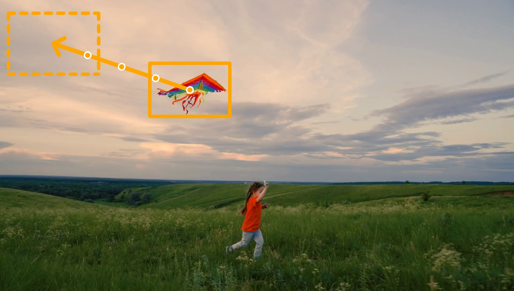
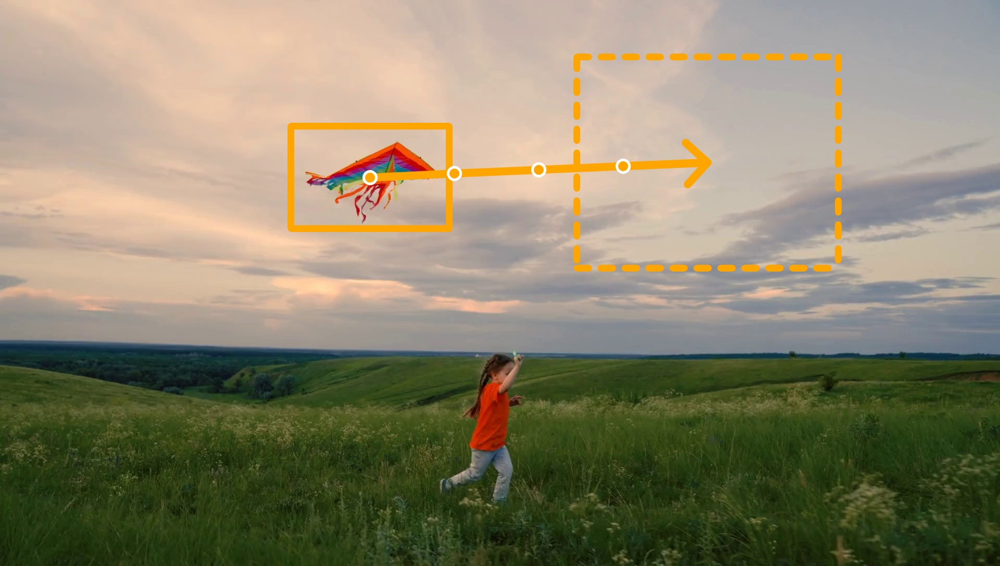
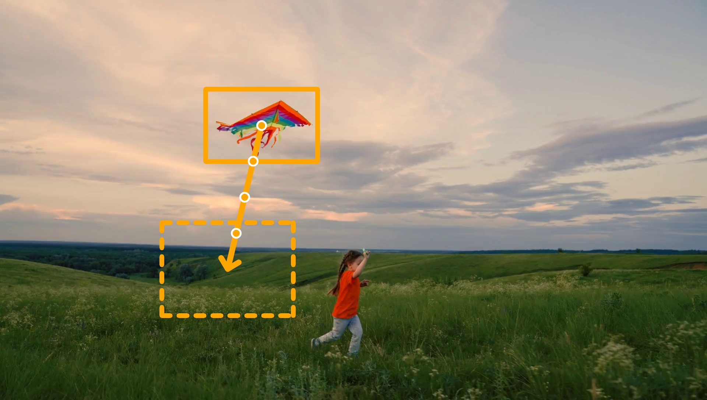
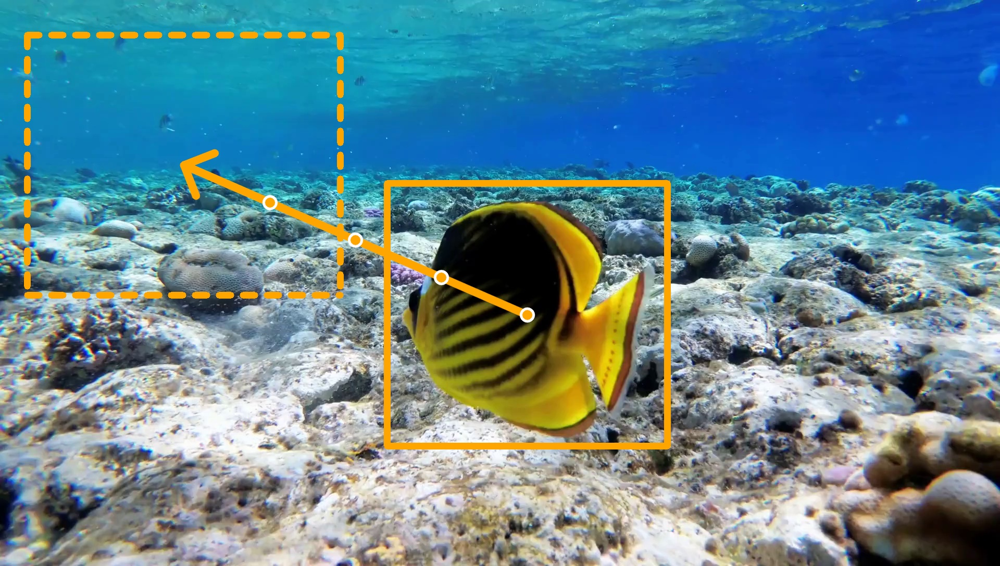
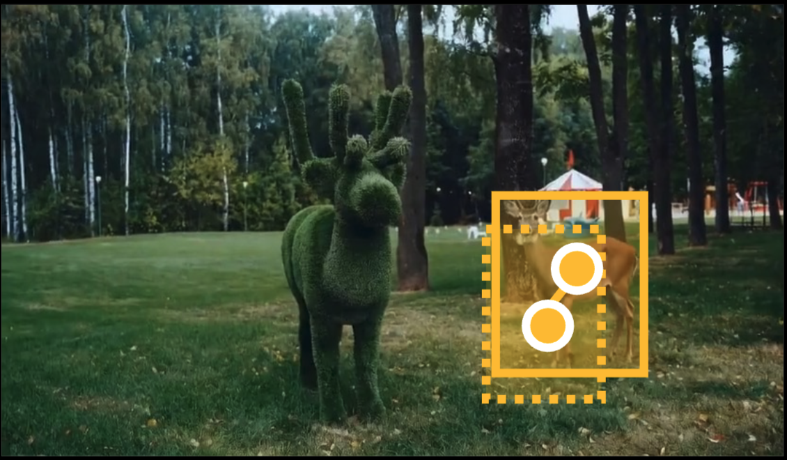
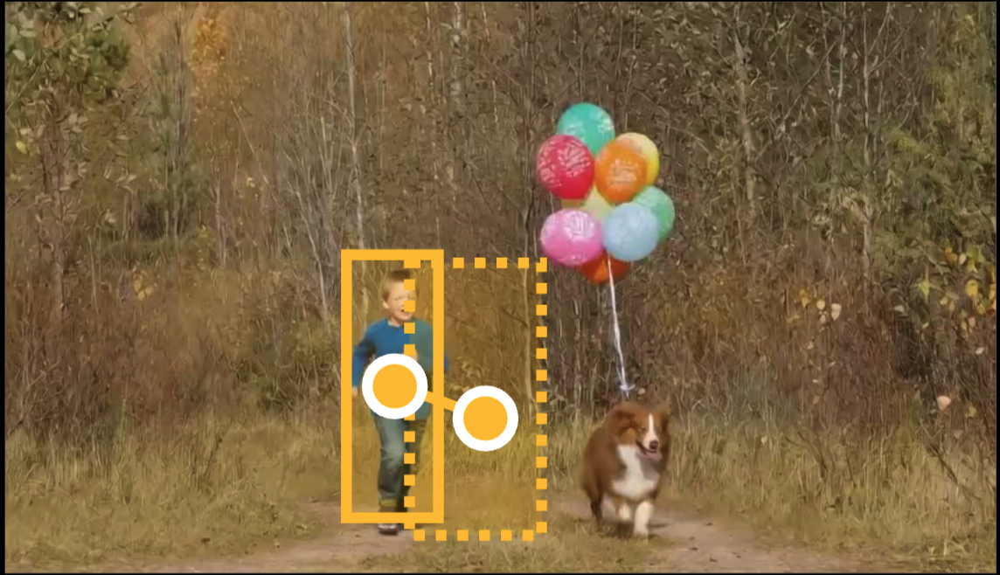
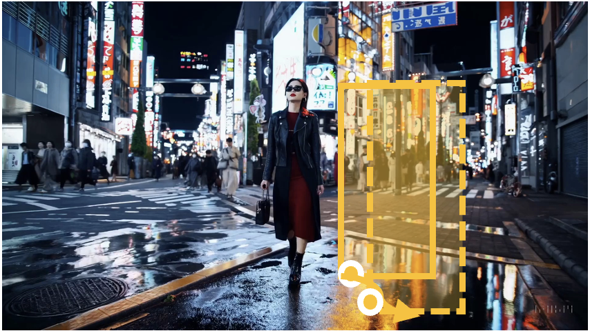
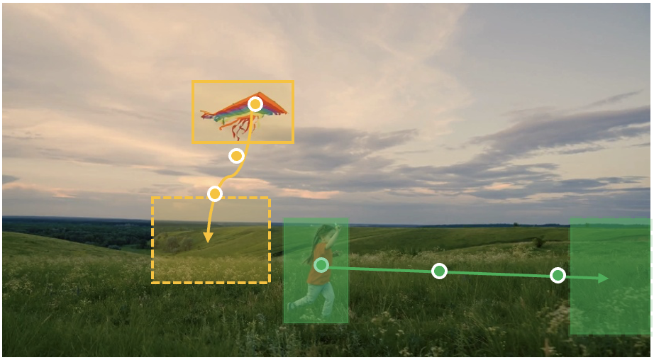
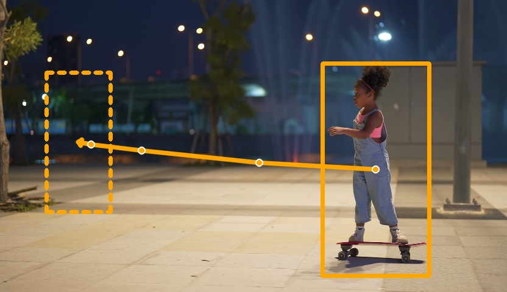

Our Results (First-Frame Path Design)
Loading prompts...
Input Video
First-Frame Path
Edited Video
Step 1: Given an input video, the user draws a trajectory on the first frame to specify the desired object motion.
Step 2: Our cross-view motion transformation module converts the first-frame trajectory into dense per-frame motion correspondences across all video frames by accounting for the camera motion in the video.
Step 3: A video resynthesis model generates the final edited video, moving the object along the specified path while preserving the visual quality of the original input video and seamlessly inpainting the region where the object previously appeared.








